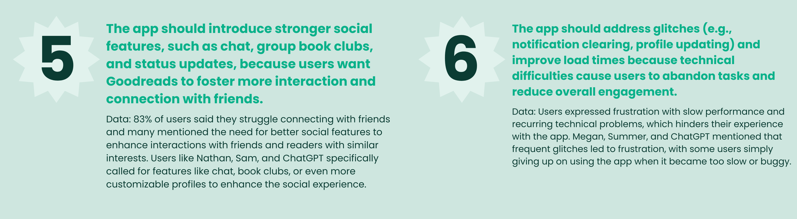
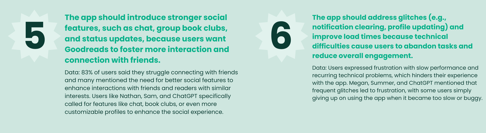

a/b testing
Before finalizing my app design, I wanted to do an A/B test to make sure my flows were as user-friendly as possible and did not cause any extra complications. I decided to test my second user flow: discovering and adding a book to shelf.
I used Chat GPT to help me brainstorm some alternative user flows for this task. Here is how I prompted my chatbot.
why this flow was chosen for testing
This user flow -discovering a new book and adding it to a shelf— is critical for user engagement on a platform like Goodreads. Many users rely on Goodreads to track their reading and organize books, so ensuring this process is as smooth and intuitive as possible can significantly impact user satisfaction.
- Frequency of Use: Adding books to shelves is a common action that users perform frequently. Any improvement here could have a big impact on the app's usability and the user’s overall experience.
- Reducing Friction: Interviews and surveys showed that users felt overwhelmed by too many options or steps, leading to friction in the book-adding process. Testing a streamlined option (Version B) can reveal if a quicker, more focused flow leads to greater satisfaction.
- Balancing Simplicity and Functionality: Version A offers more options upfront, but it may clutter the interface and slow down the process. Version B reduces visual clutter and simplifies the action, which may be more efficient but needs to be tested to ensure it doesn’t sacrifice functionality.
differences between version (a) and version (b)
Book Details Page Layout
Multiple buttons are displayed on the Book Details page, allowing users to directly choose specific actions like “Currently Reading” or “Bookclub Read.” This version gives users more options upfront but can look cluttered and may require more taps.
Only one “Quick Add” button is present, streamlining the interface and reducing visual clutter. Users can access other actions, but these are hidden behind a modal for a cleaner look.
Adding to Shelves Interaction
Tapping “Add to Shelves” leads the user to a list of all their shelves. They can scroll through all shelves and check one or more to add the book. This method provides full control but requires more steps.
Tapping “Quick Add” brings up a modal with personalized shelf options based on the user’s habits (e.g., “Want to Read,” “Favorites”). Users can quickly tap one of these options without having to scroll through a long list. Additional shelves are accessible but hidden behind a scroll or “see more” option, offering more simplicity for common actions.
Confirmation and Feedback
After selecting shelves, the user might receive a confirmation message or visual feedback to confirm the book was added.
After a single tap on a shelf in the modal, a brief confirmation (like a checkmark animation or toast message) appears to indicate that the book was successfully added, then the modal closes automatically.
testing hypothesis
The A/B test will examine whether simplifying the process with Version B (single “Quick Add” button and a modal with pre-selected shelves) improves user experience by making the flow faster and more intuitive, without sacrificing user satisfaction. To conduct the test, I had 5 users complete user flow design (a) and 5 users complete user flow design (b). Immediately after completing the task, the users answered 5 follow up questions depending on which version they were given.
Hypothesis: Users will prefer Version B because it reduces the number of steps, presents a cleaner interface, and aligns with the need for a quick and convenient way to organize books.
Metrics: User satisfaction will be measured using a post-interaction feedback survey on ease of use and enjoyment.
By comparing these metrics, you can assess which version better supports users' needs and offers a smoother experience for organizing books on Goodreads.
user flow design (a)
user flow design (b)
I used Chat GPT to provide me 5 follow up questions to ask users about their experience so I can better understand how they feel after completing their user flow. Here is how I prompted my chatbot:
follow up questions for design (a)
1)How did you feel about having separate buttons for each reading action (e.g., "Currently Reading," "Add to Shelves," "Bookclub Read") on the Book Details page?
Objective: Assess if users found the multiple buttons helpful or overwhelming.
2)Was the process of selecting shelves intuitive for you? Did you feel that it took more steps than expected?
Objective: Evaluate if users found the shelf selection straightforward or cumbersome.
3)How easy was it to find the specific shelf you wanted to add the book to?
Objective: Understand if users had any difficulty with locating or scrolling through the full list of shelves.
4)Did you feel that you had enough control over adding the book to multiple shelves if needed?
Objective: Determine if users liked adding books to multiple shelves or if it was unnecessary.
5)If you could change one thing about this process, what would it be?
Objective: Gather suggestions for simplifying or enhancing the user flow.
follow up answers for design (a)
Sam
1)“I felt a little confused on which button to pick, since they were all kinda the same color and the same size, but once I read them it was easy.”
2)“It was pretty intuitive, I just felt like the screen had a lot going on when having to pick which shelves I wanted to put it in, with the multiple options.”
3)“It wasn’t hard to find it, but I just got a little slowed down with having multiple options to select.”
4)"I liked having the options, although I wouldn't add to multiple shelves very often."
5)"Make it slightly easier to make the most complete the most common action."
Daphne
1)“It was fine, I think most of the time you are adding so the other buttons don’t need to be as prominent.”
2)“It was pretty intuitive, I felt like it was similar to what Goodreads currently has so I was able to understand it quickly.”
3)“It wasn’t hard to find it, but I just got overwhelmed with having multiple options to select.”
4)“I definitely liked having the option to add to multiple shelves since Goodreads does not currently have that.”
5)“I think the add to shelves option should be the most prominent button.”
Summer
1)“I liked having all three buttons. I felt like it made sense as I got there, although I had to look at it for a second to make sure I hit the right button.”
2)“Selecting the shelves was intuitive but I kinda wasn’t expecting the extra step and had to pause for a second to understand what to do.”
3)“It was easy.”
4)“I liked having the options and the control to add to multiple shelves.”
5)“I am not sure. But it would be cool to see which of my friends read the book.”
Rachel
1)“I liked it, I had to read them all to know which one to click though, but it was easy.”
2)“I feel like selecting shelves isn’t super necessary since I’m rarely adding a book to two shelves.”
3)“It was really easy to find the shelf.”
4)“I like having the control but again, I’m not sure if it is necessary for me as a user.”
5)“I think the process could be condensed a little bit, but overall the aesthetics and the feel of everything was great.”
Benjamin
1)“I didn’t find the buttons confusing but there wasn’t any hierarchy.”
2)“I thought selecting the shelves was easy, it reminded me of spotify but I don’t know if all of that is necessary because people don’t save as many books as they do music.”
3)“It was really easy.”
4)“I like having the control to add to multiple shelves at once. It would save time.”
5)“Maybe a shortcut way to add a book to your most used shelf because I feel like there was a lot of steps.”
follow up questions for design (b)
1)Did you find the single “Quick Add” button easy to use and understand?
Objective: Gauge if the simplified button was intuitive for users and communicated its function well.
2)How did you feel about the suggested shelves in the Quick Add modal? Did you find them relevant and helpful?
Objective: Assess whether the personalized shelf options were useful and if they matched user expectations.
3)Did the limited number of shelf options in the modal feel restrictive, or did it streamline the process for you?
Objective: Determine if users felt limited by the modal or if they appreciated the streamlined selection.
4)Was it easy to add a book to a less frequently used shelf or create a new shelf if you wanted to?
Objective: Understand if users felt they could still access all shelves or create a new one easily.
5)Would you prefer this Quick Add method over a more detailed interface, like multiple buttons on the Book Details page? Why or why not?
Objective: Get a comparison-based opinion on the simplified approach versus a more detailed interface, based on the user’s experience.
follow up answers for design (b)
Bucky
1)“I really liked the quick add option. There was very little possibility of getting confused in the process and I could complete the task very fast.”
2)“I found the shelf I wanted to use really easily, so yes. I think the shelves displayed were accurate to the ones I use most."
3)“I didn’t find it restrictive, since most of the time I will be adding it to one of those shelves. I rarely use the others honestly.”
4)“I saw a button to see more shelves so it seemed easy enough to me. I didn't click it though.”
5)“The idea of options seems nice but as long as I can still access them I prefer a streamlined version of things to speeden up the process.”
Megan
1)“Yes, very easy. Quick add is a universal thing that everyone would understand right away.”
2)“I think the favorites shelf isn’t necessary in the options since I don’t add many books to that shelf off the bat. Maybe stagger the shelves based on their size.”
3)“I think it made the process faster. I like having less decisions. As long as I can view all my shelves in a different place, I don’t mind the condensed version.”
4)“I think it would still be pretty easy to add to other shelves”
5)“I am not really sure. I like having options but I also think less decisions makes the process easier. Maybe a perfect in-between.”
Kennedy
1)“The quick add was very easy to understand. It was the obvious choice.”
2)“Yes the shelf was very easy to find and they are the ones people use the most.”
3)“I didn’t find it restrictive, I feel like I rarely use alternative shelves.”
4)“Yeah, I feel like the “see more” button implies it will be really easy to access them.”
5)“This version seemed good all around to me so I wouldn’t want to mess with it and add more options.”
Audrey
1)“I love the single button option. As someone with ADHD I like when things are obvious.”
2)“I found the shelf I was looking for so I did find it helpful.”
3)“It wasn’t restrictive. I like the idea of being able to see all the shelves if I use them though.”
4)“I didn’t try to find another shelf but I think it is important this option is easy to access.”
5)“I can’t imagine what other options I would need besides adding it to the shelf but if the other buttons were useful to me I would like it. ”
Alexa
1)“The quick-add made it very clear and very easy to complete the task.”
2)“I think the shelves were good, it would be nice if the user could choose which of their shelves would go in that section since you can’t see them all.”
3)“I thought it was fine like that. The process felt very streamlined to me. ”
4)“I didn’t try accessing more shelves but I saw a button to do so, so it seems very accessible.”
5)“I think more detail in an interface can be confusing and this version didn’t limit options while keeping things streamlined.”
I used Chat GPT to help me analyze the data I received from users and summarize my results to help me better identify patters and an overall unbiased consensus from the data. Here is how I prompted my chatbot:
results from user flow (a)
Ease of Use: Most users found the interface relatively intuitive, but many noted that they had to pause to ensure they selected the correct button. There was a common sentiment that the screen felt cluttered and that the multiple options could be overwhelming.
Shelf Selection Process: Users generally found it easy to select shelves but felt that the multiple steps involved added complexity. A few users mentioned that the extra options (like adding to multiple shelves) were beneficial, although some thought they weren’t necessary for their typical use.
Control and Flexibility: The option to add to multiple shelves was appreciated by some, but several users felt that it wasn’t necessary for every use case. The sentiment was split—some users valued the control, while others found it excessive.
Suggestions for Improvement: Users suggested reducing steps, improving the visual hierarchy of buttons, and making the "Add to Shelves" button more prominent.
results from user flow (b)
Ease of Use: All users found the Quick Add button easy to understand and appreciate the simplicity. Many described the process as “streamlined” and “clear,” with fewer opportunities for confusion compared to Version A.
Shelf Relevance: Most users were happy with the suggested shelves in the modal. However, some noted that it would be beneficial if they could customize which shelves appear in the Quick Add options based on their needs.
Flexibility: Users generally did not find the limited number of shelves restrictive. The "See More" button was reassuring for those who wanted to access less-used shelves, indicating that additional options were available if needed.
Preference for Streamlined Interface: Users overwhelmingly preferred the Quick Add approach, mentioning that it minimized decision fatigue and provided a more convenient experience.
did my hypothesis test true?
Yes,the hypothesis that users would prefer Version B due to its simplicity and convenience proved to be accurate. The majority of users expressed a preference for the streamlined Quick Add functionality in Version B, as it reduced the number of steps and presented a cleaner interface.
User satisfaction was higher for Version B, with users describing it as "easy," "streamlined," and "clear." Version A had mixed reviews; while some users valued the control it provided, others found it overwhelming or felt that certain options weren’t necessary for their use case. Overall, users seemed more content with the convenience and efficiency of Version B.
did you gain any unexpected insights?
Some users suggested that being able to customize which shelves appeared in the Quick Add modal would further enhance usability. This was an interesting suggestion that wasn’t anticipated and could potentially make the flow even more personalized.
Another insight was that a few users in Version A liked having the option to add to multiple shelves, even if they didn’t use it often. This implies that a balance of simplicity with flexible options could be beneficial in future designs.
One user noted that it would be helpful to see which friends have read the book, hinting at a potential social integration element that could add value to the experience.
takeaways using AI
This was my first time using AI so extensively for a UX project and I was very impressed by its ability to streamline the research process, especially when it came to finding patterns in data. As designers, we can be biased, and using AI helped me see past my preferences and understand what the users were telling me based on their responses. In the future, I plan to continue using AI for data driven projects such as this one and would encourage my future employers to implement it into their own UX/UI design processes as well.
 
